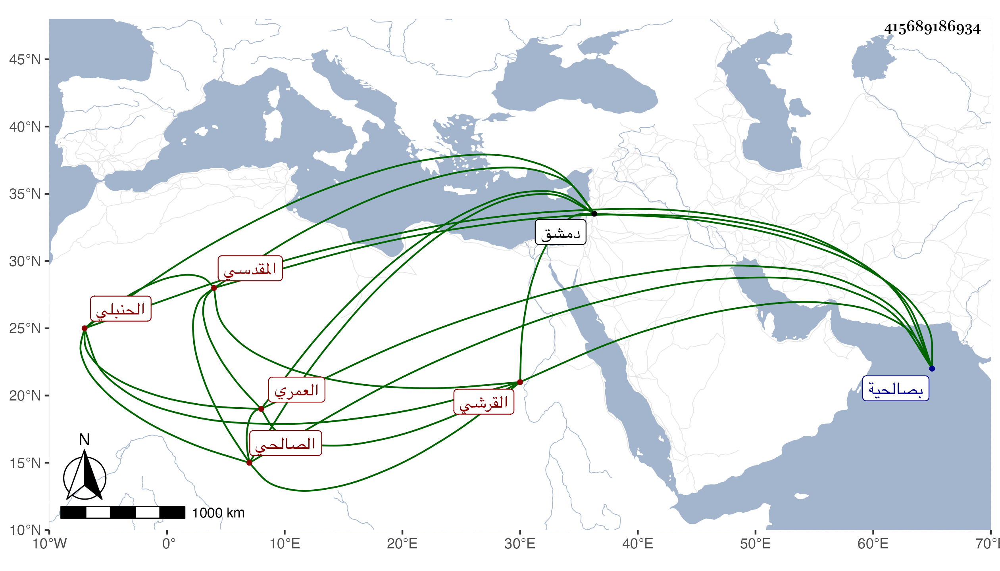

0902Sakhawi.DawLamic.ITO20230111-ara1.EIS1600.415689186934
Biography ID: 415689186934
338
ست القضاة ابنة أبي بكر بن عبد الرحمن بن محمد بن أحمد بن سليمان ابن حمزة أم محمد ابنة العماد القرشي العمري المقدسي الصالحي الحنبلي أخت ناصر الدين محمد واخوته ويعرف أبوهم بابن زريق بتقديم الزاي . ولدت في ربيع الأول سنة سبع وتسعين وسبعمائة وأحضرت على فرج الشرفى وأسمعت على أبي حفص البالسي وفاطمة ابنة محمد بن أحمد بن السيف وغيرهما ، وأجاز لها أبو هريرة ابن الذهبي و أبو الخير بن العلائي وعبد الله بن الحرستاني وفاطمة ابنة ابن المنجا وفاطمة ابنة ابن عبد الهادي وآخرون وحدثت سمع منها الفضلاء ولقيتها بصالحية دمشق فحملت عنها أشياء ، وكانت صالحة خيرة محبة في الحديث وأهله من بيت رواية وعلم . ماتت في ربيع الأول سنة أربع وستين وصلى عليها من الغد بالجامع المظفرى ودفنت بمقبرة جدها الشيخ أبي عمر بسفح قاسيون ، وهي جدة البرهان إبراهيم بن محمد بن إبراهيم بن المعتمد لأبيه رحمها الله وإيانا .
